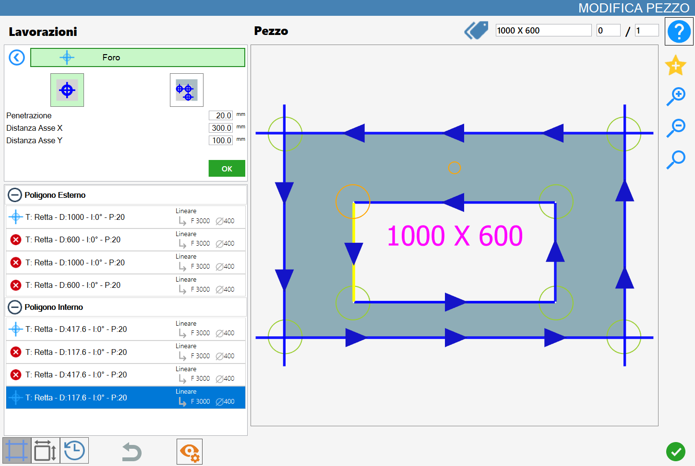
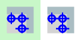
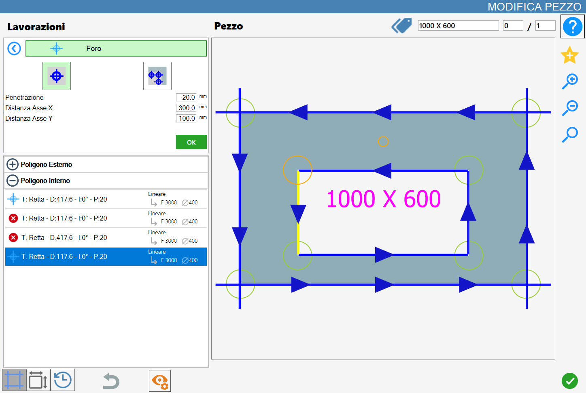
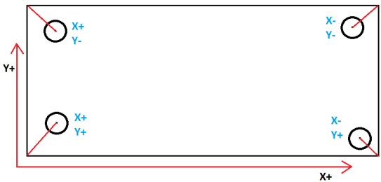
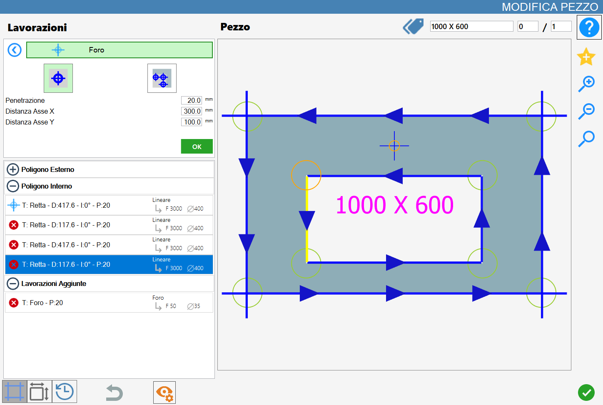
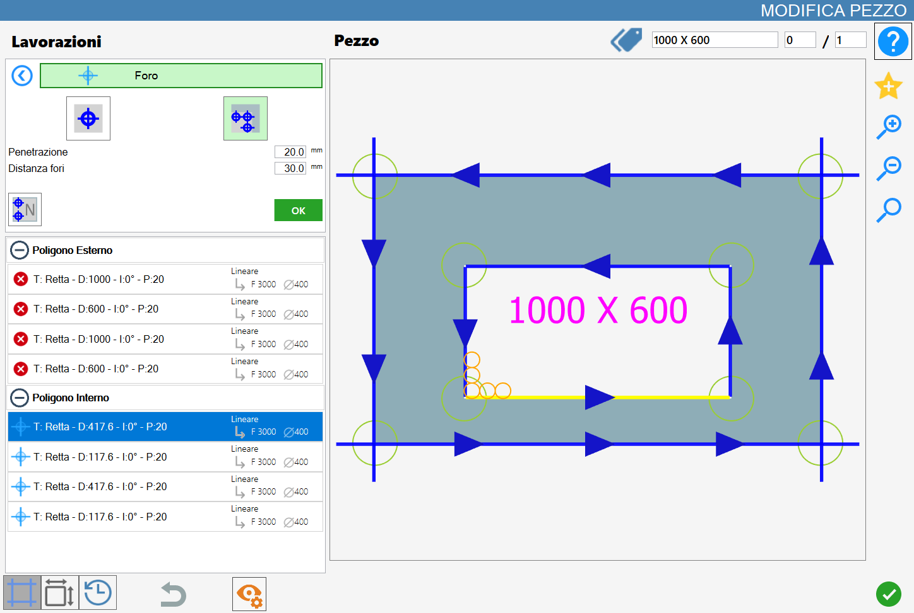
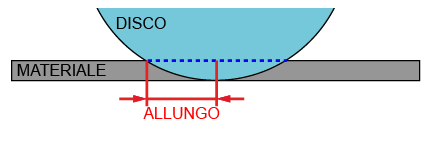
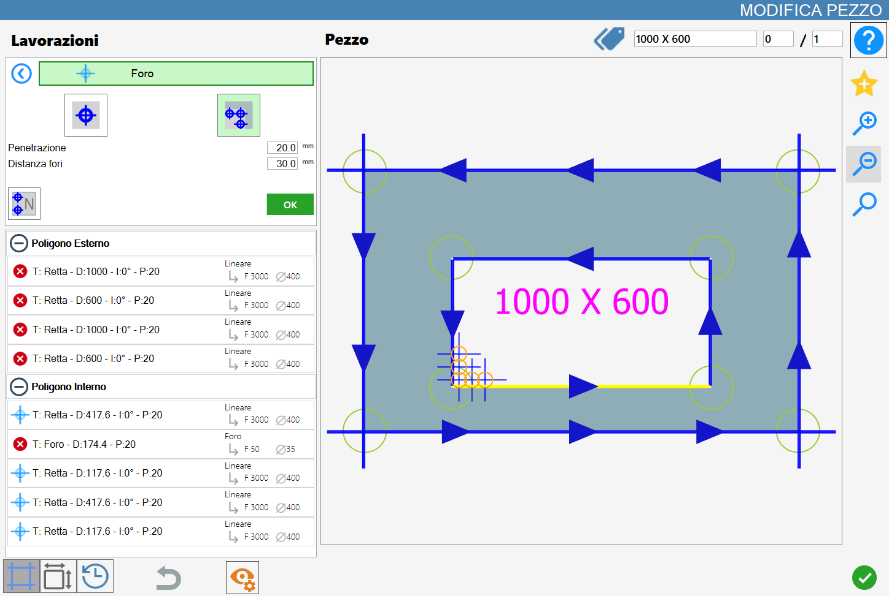

In this page is possible to execute a single hole in a specific position or to execute a series of holes at a fixed distance.

Working types
To use this processing, it is necessary to first choose one of the two available modes, selecting the corresponding button:
NOTEThe modes 'Hole in the material' and 'Scodo removal' are mutually exclusive: the activation of one excludes automatically the other.
Hole in the material | |
 | Remove Disk's Material |
Hole in the material
Selecting this working mode, the vertex currently selected will be highlighted in orange and, starting from it, the preview of the hole to add will be projected, also displayed in orange and generated based on the set parameters.

Parameters
Penetration | Indicate the depth that the working must reach. |
Distance axis X | Distance on the X axis from the starting point of the selected cut, at which the hole will be created. |
Distance axis Y | Distance on the Y axis from the starting point of the selected cut, at which the hole will be created. |
NOTEWith respect to the selected point, the part to the right of the circle (for the X) and the part above the circle (for the Y) is considered positive, as shown in the figure.

Execution Hole in the material
NOTEIt is possible to apply working by pressing the button on the left of the fitting cut in the polygons list.An icon red with a 'X' indicates that the working can’t be applied to the desired cut.
Once a vertex has been selected and the parameters of distance and penetration it will be possible to confirm the working pressing the green OK.
To each hole inserted successfully in the material corresponds the update of the preview and the automatic insertion in the 'Added Processing' section on the left:

NOTEUnlike Scodo Removal, however, it is possible to select also the center points of the arcs, highlighted in the preview together with all of the other valid points as reference for the insertion of the holes in the material
Remove Disk's Material
Activating this mode, the selected vertex becomes the origin point of an orange preview made up of multiple holes, the size of which depends on the mounted drill bit and the quantity of which is determined by the Hole Distance parameter.

Parameters Removal Scodo
Penetration | Indicates the depth that the processing must reach. |
Automatic holes distance | Determine the distance between the origin points of the holes. |
Execution of Remove Disk's Material
NOTEIt is possible to apply the working by pressing the button on the left of the appropriate cut in the polygon list.An icon with a red color with an 'X' indicates that the processing cannot be applied to the desired cut.
The removal mode Scodo can be used between two consecutive cuts, regardless of whether they are both of straight edge type, both of curved edge type, or one of each type.

The hole is added to the list of internal polygon and identifies the scrap removal processing.
Below is provided an example of Rimozione Scodo applied on two adjacent sides in the inner polygon:
